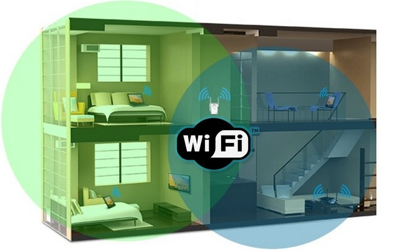
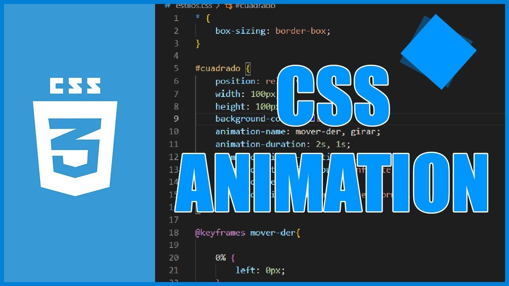

Upcoming Ideas
WiFi
A project that I would like to do in the future is to be able to create a WiFi network from scratch by configuring everything, the router, the modem and everything we have learned in networking. I think it would be very interesting and it is something that makes me too curious.
Interactive Personal Portfolio
I would like in the future to go back to this website and improve it with animations and give more life to this portfolio with projects that I will be doing, but the main idea is to give animation to this website and add gradients in the background.
Project Title 3
A Python program that allows you to generate secure passwords adapted to the user's needs. This generator creates passwords with customization options, including length and character types, to ensure security and adapt to different scenarios. I think it would be a good project to practice programming and improve my skills.